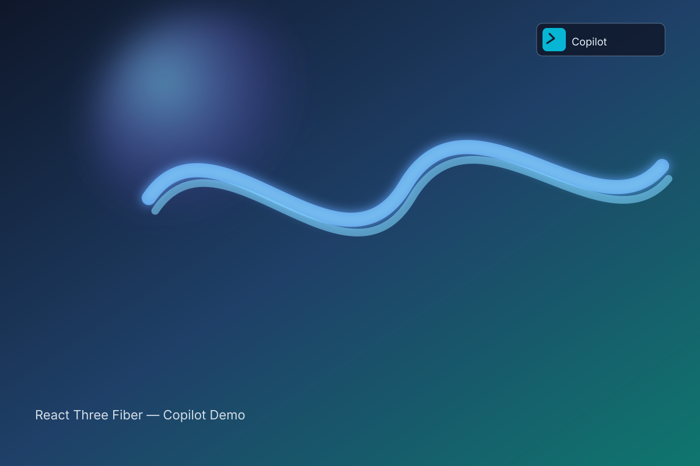
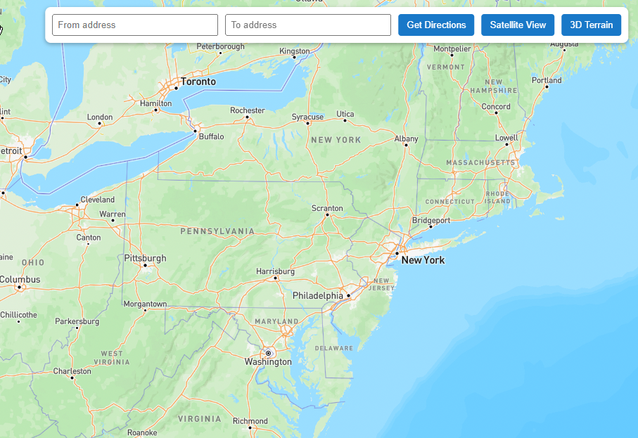

Code Repositories
Open SourceReact To Do List App
Full-featured to-do list app built with React and TypeScript.
⌥ View Repository
Google Maps API Demo
TypeScript app using the Google Maps Geocoding API to search and pin addresses on an interactive map.
⌥ View RepositoryReact Three Fiber Project
Vibe coding case study using React Three Fiber (React + Three.js) for interactive 3D experiences.
⌥ View Repository
React Three Fiber — Copilot Demo
Interactive 3D scene built with React Three Fiber using GitHub Copilot for AI-assisted development.
⌥ View RepositoryLive Projects
Deployed
Mapbox App — Navigation & Terrain
Interactive map app with driving directions and terrain mode powered by the Mapbox API.
↗ View Live